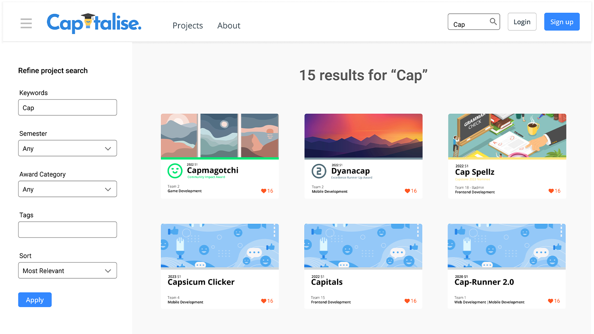
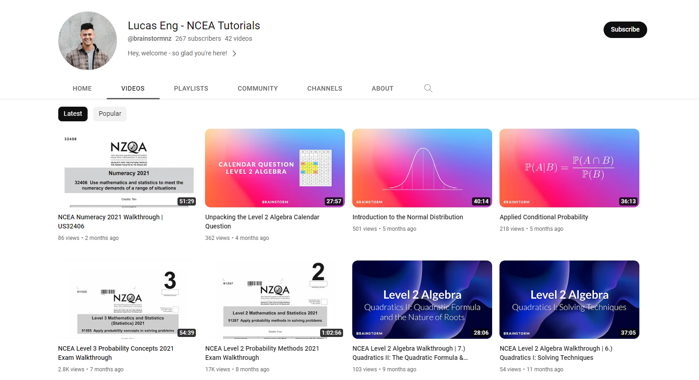
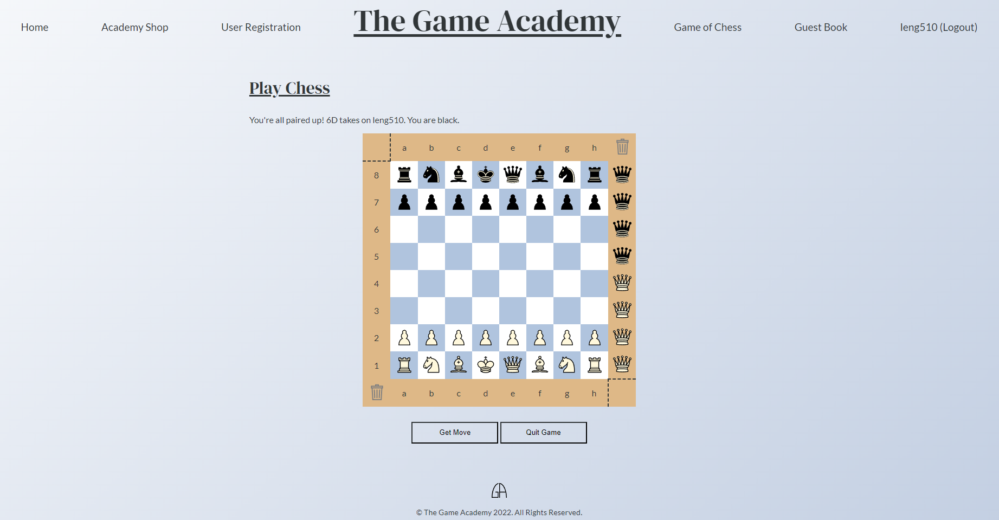
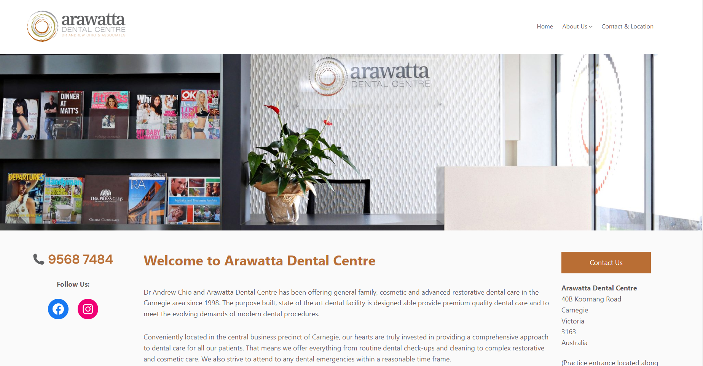
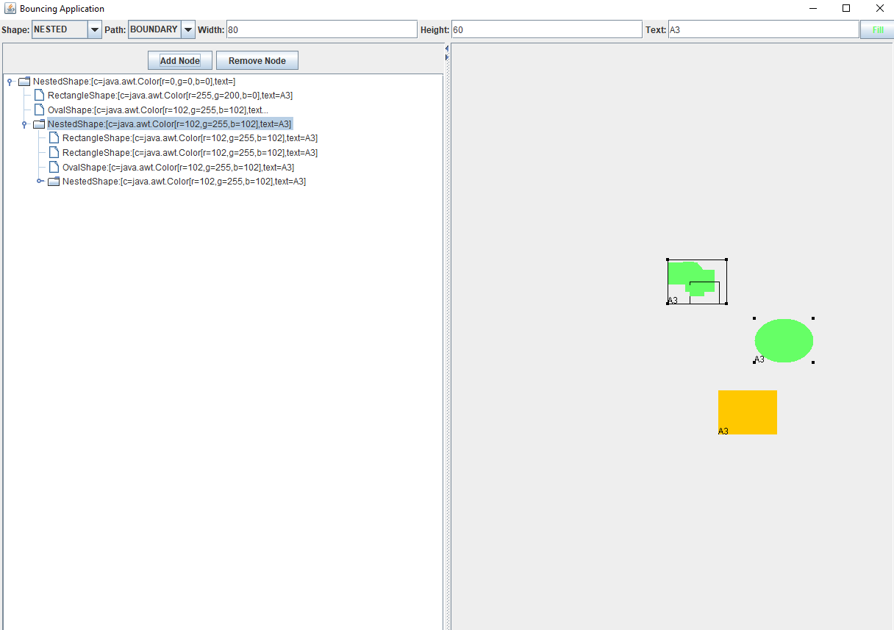
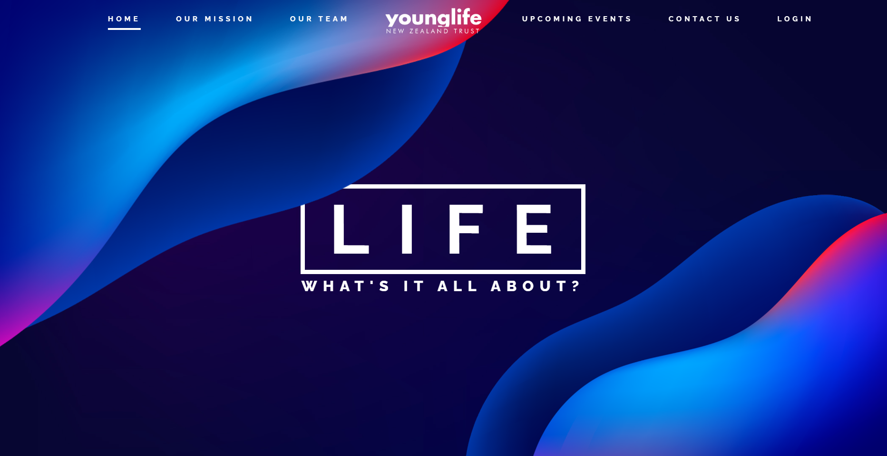

Kia Ora,
|
Great ideas have great effects.
In today's world, change is rapid. The evolution of technology. The discovery of a new drug. Now, more than ever, when we look at the world around us, we are greeted by great ideas in their ultimate form.
Most people would agree (in both a literal and metaphorical sense) that today's young people are the
answer to tomorrow. But, are we - as an education sector - sufficiently aiding young people in their ability to nurture and
develop great ideas?
Personally, I don't believe we are there just yet.
If we want our young people to leave a tangible,
beneficial impact on future generations, then they need to develop the ability to:
- Recognise and discover their strengths
- Challenge deep and complex issues
- Think up incredible yet rational solutions
I aspire to use my knowledge of STEM to help young people develop this. To me, it's so vital that young people have a way of learning that is more engaging than reading a textbook. It's so important that they have a way of thinking that is more than rote memorisation. Young people need a method of teaching that plants great ideas with great effects.
I am currently completing my undergraduate degree at The University of Auckland. I am studying my third year of a Bachelor of Science, majoring in Computer Science and Statistics.
I am scheduled to graduate in July of 2023, and am looking to begin graduate study in Secondary teaching at the beginning of 2024.
Technical Skills
 |
 | |||||
| PYTHON | JAVA | C# | R | HTML 5 | CSS 3 | JAVASCRIPT |
Projects
https://github.com/lucaseng|  |  |  |
| Capitalise
Currently under development, this is an online capstone project showcase gallery for students at the University of Auckland. My role is in API development and deployment. |
Lucas Eng - NCEA Tutorials
A YouTube channel I run in order to develop my ability to teach and lecture. Content heavily focuses on NCEA Mathematics, Statistics and Digital Technologies. |
The Game Academy
A clone of chess.com. Both front-end and back-end were coded by myself as required by the brief. The purpose of this project was to demonstrate how APIs connect both the front and back end together. |
|  |  |  |
| Arawatta Dental Centre
A WordPress CMS website for a dental centre in Melbourne, Australia. I created, hosted and currently manage this website. |
Java-based Shape Bouncing
A basic GUI based on the Java platform. The purpose of this project was to demonstrate an understanding of OOP as well as implementing event handlers. |
Young Life New Zealand Trust
A mock website I created as a scholarship project in my ultimate year of High School. |